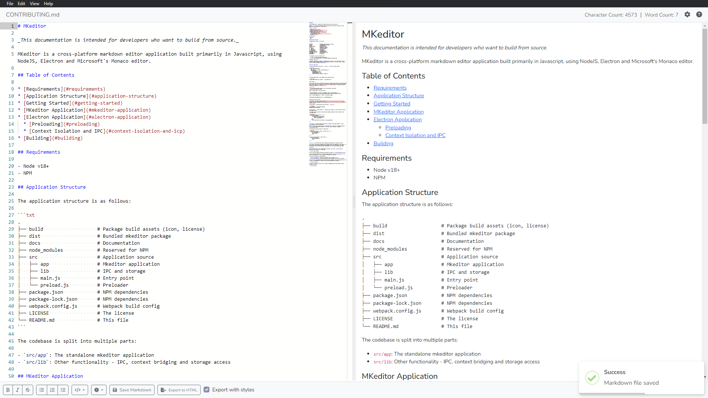

Get started with MKEditor
Quickly and easily get started writing your markdown documents with MKEditor's rich set of features.
Download for...
This software is released under an MIT License. View the source code here.
View editor shortcuts here.

Features
- Built with monaco, markdown-it and electron.
- Follows the CommonMark markdown specification.
- Includes a built-in HTML renderer with bootstrap for previewing rendered markdown.
- Includes the ability to change settings such as dark mode and word-wrap for your preference.